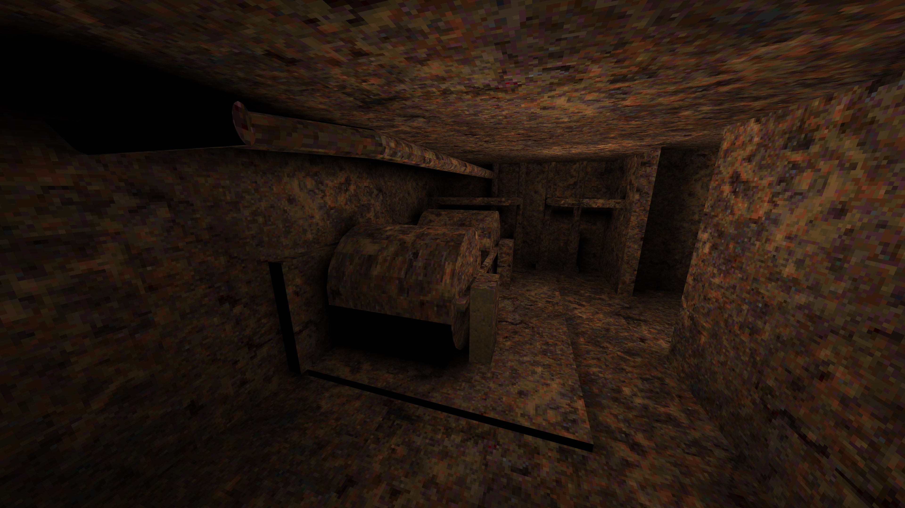
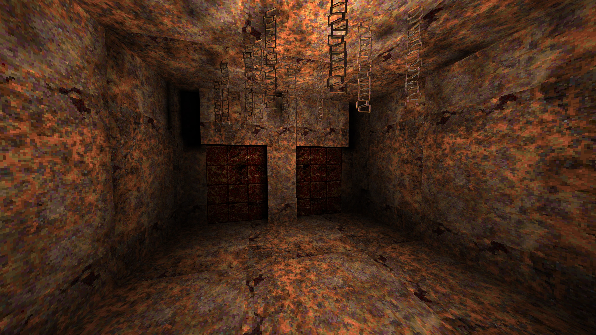
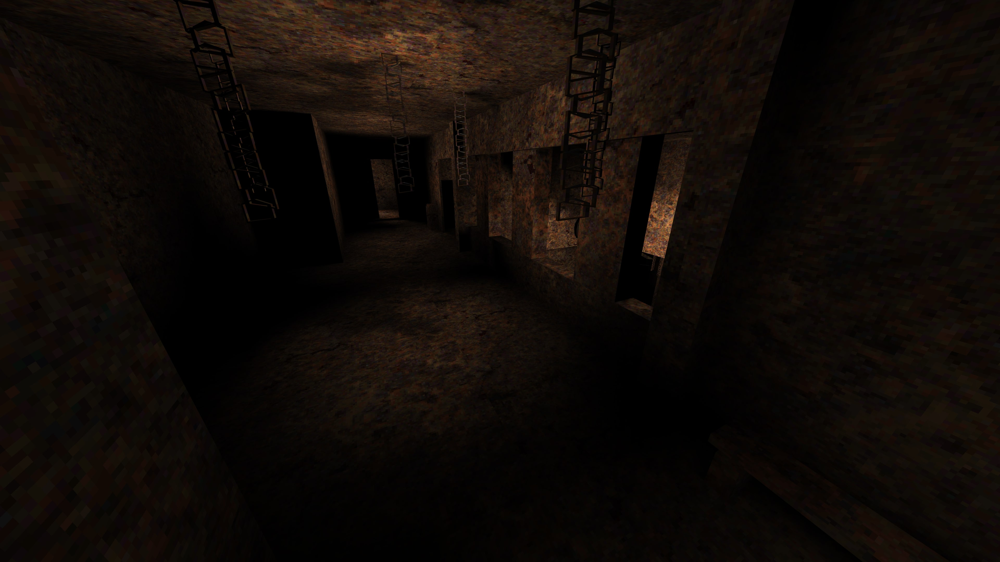
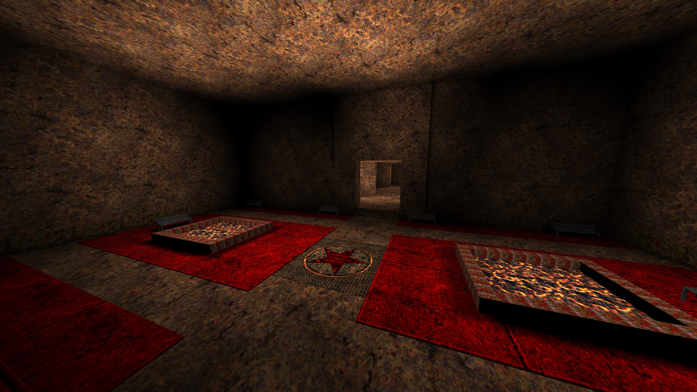
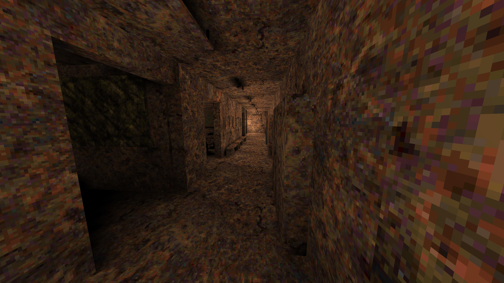
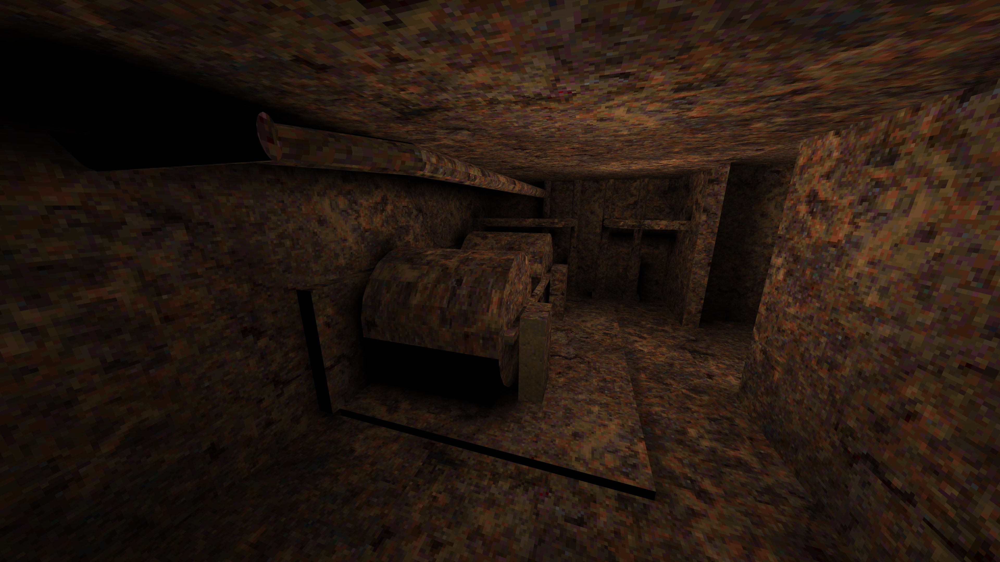
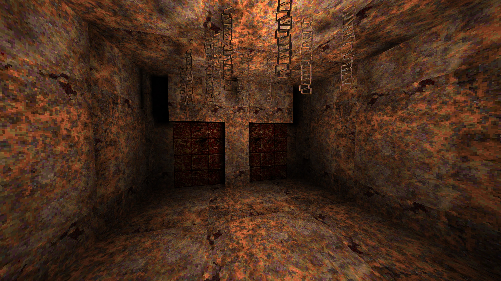
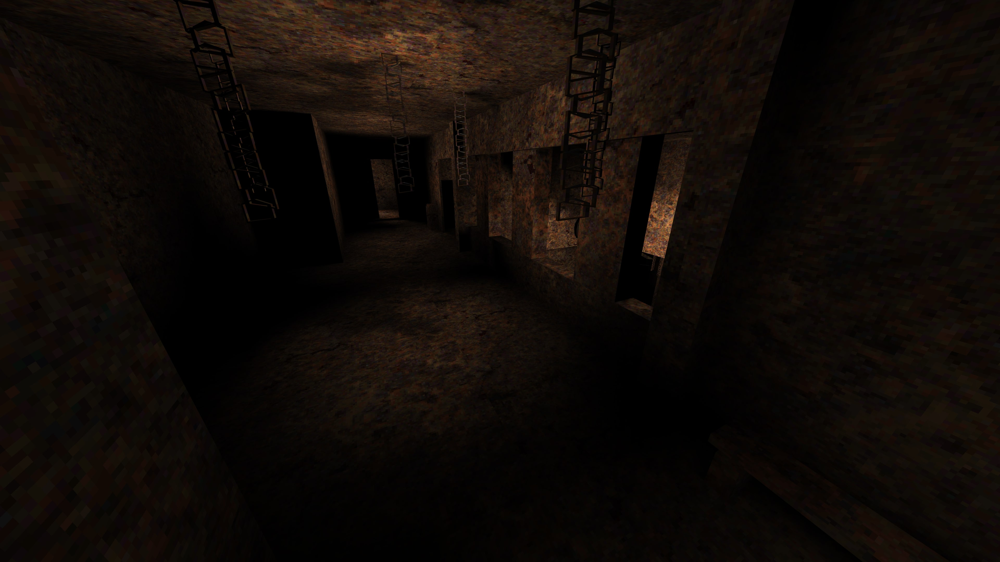
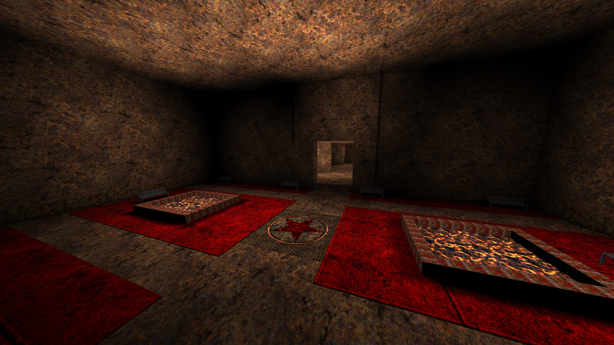
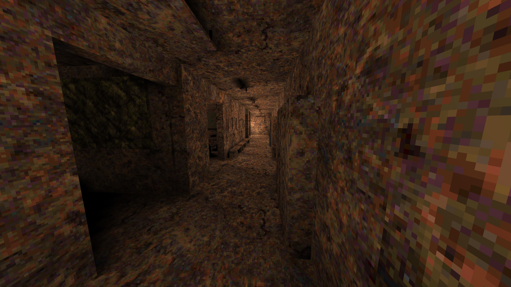

Overview
After creating "Doom Meets Resident Evil" I wanted to push myself and tackle a bigger project in a different engine, this time in TrenchBroom. I started by building multiplayer maps to get comfortable with the software and once I got the hang of it, I decided to create a single-player mod set in the Silent Hill universe. TrenchBroom gave me a lot more creative freedom, so I took advantage of that to take on the challenging task of recreating not just the base version of Midwich Elementary School, but also its nightmarish Otherworld version, the one that really defined what made Silent Hill so iconic. I followed the same formula as my Doom mod: explore the school, solve puzzles, find ways to progress, and fight enemies.
• Playtime: 25-30 minutes
• Development Time : 8 weeks
Workflow
- I started by gathering references from Midwich Elementary School in the original Silent Hill game.
- Then, in TrenchBroom, I began building and connecting all the rooms inside the school.
- I placed key items, enemies, text messages, and sound triggers to create tension and control the pacing.
- I added lighting and the signature fog effect to really enhance the atmosphere.
- After completing the base version of the school, I created the Otherworld version, completely changing the layout and flow while introducing a new nightmarish aesthetic, new enemies, and fresh puzzles for the player to solve.
- Finally, I balanced combat encounters, exploration rewards and the placement of ammo boxes and health packs.
Problems encountered and how i solved them
-
From a technical perspective, I ran into a lot of crashes because I added so many different sectors, walls, and props. This overloaded the engine, making the mod completely unplayable at times.
That forced me to constantly optimize and get creative: I lowered texture resolutions/densities, reduced the complexity and size of brushes, and made other adjustments to keep things stable.
Conclusion and Challenges
- This project really taught me the importance of balance and flow. At first, after exploring the base version of the school and then transitioning to the Otherworld version, it felt a bit boring. Through playtesting I decided to introduce completely different enemies, new weapons, and unique traps to make the second half feel fresh and truly distinct.
- From a level design perspective, TrenchBroom gave me the freedom to work properly in a 3D environment. I took full advantage of that by adding variety in height, space, and shape. When everything came together, the project started feeling natural and cohesive.
- Overall, this was an incredibly valuable experience for me. I used every tool and technique I could to enhance the atmosphere. Lighting in particular played a huge role and made the spaces feel claustrophobic and oppressive, resulting in a much more immersive and cohesive horror experience.
Gallery

 








